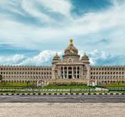

"Explore the Heart of Bangalore Where Architecture, and Politics Unite at Vidhana Soudha!
Vidhana Soudha is the seat of the Karnataka Legislative Assembly and one of Bangalore's
most iconic buildings. Highlight its neoclassical style with Dravidian influences.
Architectural Beauty
Design and Structure:its grand architecture,which features a mix of Indian, European, and modern styles.Emphasize the large central dome,granite exterior,and the intricate carvings.
Lighting and Night View:the building is beautifully illuminated at night and makes for a stunning view, a popular sight for tourists and photographers.
Royal Heritage: The palace has been home to the Wodeyar family and remains with their descendants today.
How To Reach
By Metro: vidhansabha metro Station (purple Line).
By Bus: Multiple BMTC routes pass by the building.
By Car: Parking available near entrance.
Main Attractions
Attara Kacheri: Karnataka High Court, a colonial-era gem.
Bangalore Palace: Tudor-style architecture, offering royal history tours.
State Museum: Explore Karnataka’s cultural and historical artifacts.
Things to Do
Explore the Palace Interiors.
Photography: Best captured during daylight and at night when illuminated.
Explore the Area: Walk through Cubbon Park, visit nearby temples and monuments.
Cultural Events: Attend public events or observe legislative sessions from a distance.
Fun Facts
Construction Time: Took 5 years to complete.Houses over 1,000 rooms.
Symbol of Karnataka: Represents the political heritage and governance of the state.
Best Viewing Spots
Vidhana Soudha's Illumination: Photogenic at night.
Cubbon Park: Ideal for full views of the building’s grandeur.
Visitor Tips
Respect the Area: It's a working government building, so maintain decorum
Safety Tips: Keep your belongings secure, especially in crowded areas
Don’t forget to take pictures, but check the photography rules first!